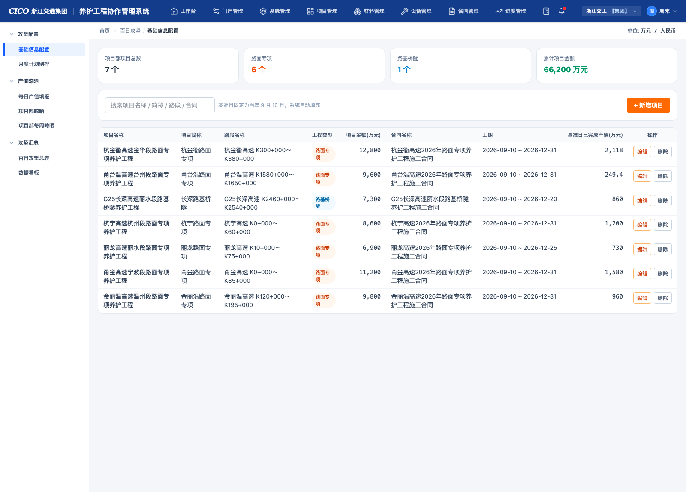
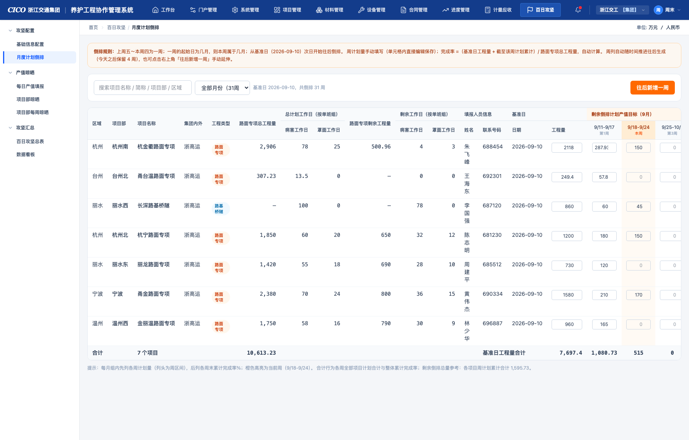
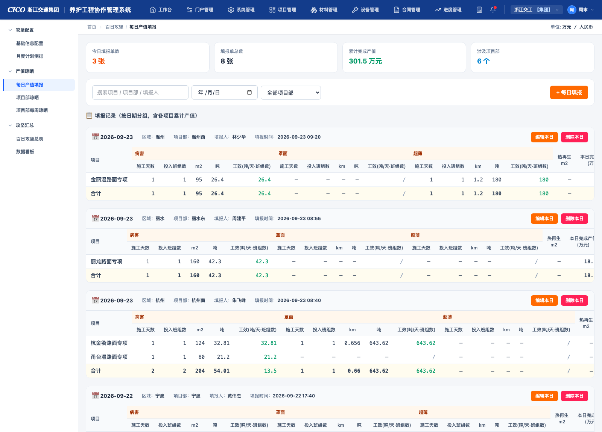
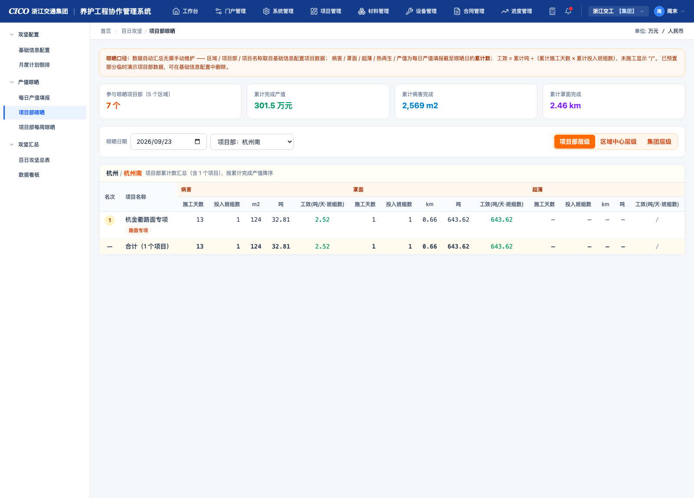
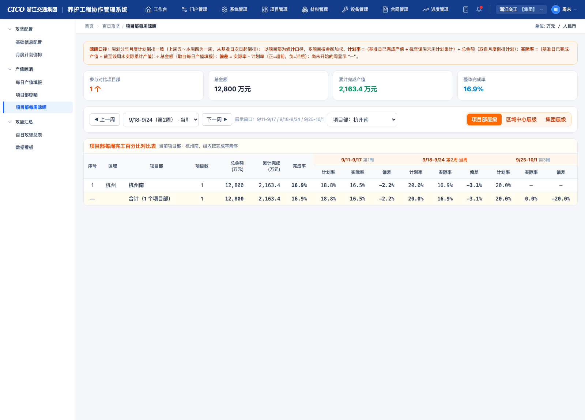
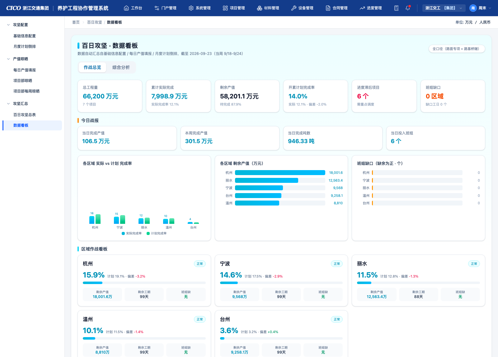
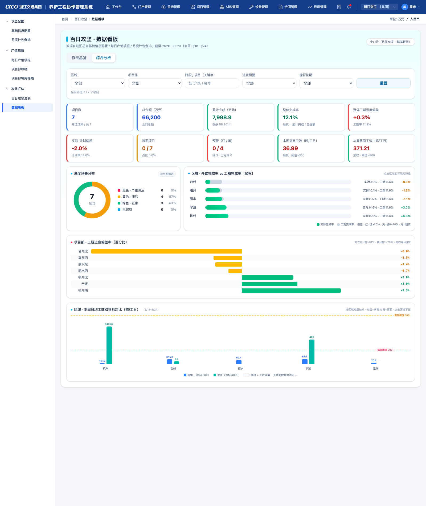

百日攻坚模块 产品需求文档（PRD）
公路养护工程协作管理系统 · 攻坚进度全过程管理（配置 → 计划 → 填报 → 晾晒 → 看板）
1产品概述
1.1 背景与目标
集团开展「百日攻坚」专项行动，需要对各区域中心、项目部辖内养护项目的产值进度进行统一配置、逐级计划、每日填报、多层晾晒与集中看板的全过程管理。本模块提供从项目基础档案维护到集团数据看板（作战总览 / 综合分析）的完整闭环，实现：
- 计划可控：以周为最小颗粒度倒排产值计划，随时间自动向后延伸；
- 数据同源：产值进度以「每日填报」为唯一实际数据源，晾晒与看板全部自动汇总，杜绝二次录入；
- 逐级透明：项目部 → 区域中心 → 集团三级口径随时切换，进度偏差、班组缺口一目了然。
1.2 核心概念与名词解释
| 名词 | 解释 |
|---|
| 基准日 | 固定为当年 9 月 10 日。基准日之前完成的产值为「基准日已完成产值」，作为所有计划/实际累计的起始基数。 |
| 攻坚周 | 上周五 ~ 本周四 为一周（如 9/11-9/17）。周起始日所在月份即该周归属月（如 9/25-10/1 归属 9 月）。周序列从基准日次日起对齐周五连续生成。 |
| 三大工种 | 病害（计量单位 m²）、罩面（km）、超薄（km）；辅助工种 热再生（m²）。 |
| 工效 | = 吨数 ÷（施工天数 × 投入班组数），单位「吨/天·班组数」。施工天数或投入班组数为 0 时代表未施工，显示「/」。 |
| 组织层级 | 项目（最小单元）→ 项目部（填报主体，一项目部一日一张填报单）→ 区域中心 → 集团。 |
| 工程类型 | 「路面专项」与「路基桥隧」两类；仅路面专项参与工程量口径的倒排完成率计算。 |
1.3 信息架构与菜单
顶部一级导航「百日攻坚」，下辖 3 个分组、6 个页面 + 1 个待规划页：
| 分组 | 页面 | 路由 | 定位 |
|---|
| 攻坚配置 | 基础信息配置 | /campaign/config | 项目部项目档案与施工参数维护 |
| 月度计划倒排 | /campaign/plan | 按周倒排产值目标计划 |
| 产值晾晒 | 每日产值填报 | /campaign/daily | 项目部每日多项目产值填报 |
| 项目部晾晒 | /campaign/rank | 项目部累计数汇总晾晒 |
| 项目部每周晾晒 | /campaign/weekly | 每周计划/实际完成率对比 |
| 攻坚汇总 | 百日攻坚总表 | /campaign/summary | 待规划（占位） |
| 数据看板 | /campaign/dashboard | 集团数据看板（作战总览 / 综合分析双 Tab，清新浅色风格） |
1.4 模块数据流
基础信息配置（项目档案/基准日/剩余工作日）
├─→ 月度计划倒排（周计划量 weeklyPlans，行内编辑）
└─→ 每日产值填报（每日实际：工种量/吨数/班组/产值）
├─→ 项目部晾晒（工种累计数汇总）
├─→ 项目部每周晾晒（计划率 vs 实际率 vs 偏差）
└─→ 数据看板（作战总览：核心指标/区域作战/预警清单；综合分析：条件过滤+KPI+四图表）
依赖关系：「基础信息配置」为全局前置模块；未维护项目时，计划倒排、填报、晾晒、看板均展示空态引导。计划与实际两条数据线在「每周晾晒」与「数据看板」中汇合形成偏差预警。
2.1基础信息配置
功能说明
- 维护当前组织内项目部所属项目档案，是整个百日攻坚模块的数据基石；
- 列表展示已维护项目，支持关键字搜索、新增、编辑、删除；
- 顶部汇总卡：项目总数、路面专项数、路基桥隧数、项目总金额；
- 表单按「项目基础信息」与「项目施工信息」两个区段分组，共 17 个字段；区域 / 项目部 / 填报人信息不在此维护（自动带出，见下方说明）。

图 2-1 基础信息配置：汇总卡 + 关键字搜索 + 项目列表
字段说明
| 字段 | 必填 | 输入类型 | 说明 / 取数规则 |
|---|
| 项目名称 | 必填 | 文本 | 项目全称，列表与各下游模块展示优先级低于项目简称 |
| 项目简称 | 选填 | 文本 | 列表及晾晒表中的主要显示名称 |
| 路段名称 | 选填 | 文本 | 如「杭金衢高速 K300+000～K380+000」 |
| 工程类型 | 必填 | 下拉单选 | 路面专项 / 路基桥隧；影响晾晒表标签色与倒排完成率适用性 |
| 集团内外 | 选填 | 文本 | 如「浙高运」 |
| 项目金额（万元） | 选填 | 数值 | 产值口径完成率的分母（每周晾晒、数据看板） |
| 合同名称 | 选填 | 文本 | 关联合同 |
| 工期起始 / 结束时间 | 选填 | 日期 | 结束时间影响倒排周自动延伸范围、班组缺口剩余工期计算；结束不得早于起始 |
| 基准日 | 自动 | 只读 | 固定为当年 9 月 10 日，不可修改 |
| 基准日已完成产值（万元） | 选填 | 数值 | 计划与实际累计公式的起始基数；可在倒排表中行内维护 |
| 路面专项总工程量 / 剩余工程量 | 选填 | 数值 | 倒排完成率分母（工程量口径） |
| 总计划工作日 / 剩余工作日（病害、罩面） | 选填 | 数值 | 按单班组口径编制；剩余工作日决定数据看板班组缺口计算 |
字段维护口径：区域、项目部、管养范围、填报人（姓名 / 联系号码）已从本页表单移除 —— 区域 / 项目部 / 填报人按填报账号所属组织自动带出（演示环境由预置数据提供）；对应档案字段保留，供月度倒排展示、每日填报自动带出、三级层级晾晒与数据看板继续使用。
交互说明
| 交互点 | 说明 |
|---|
| + 新增项目 | 打开两区段表单弹窗；基准日自动填充并锁定为 9.10，工程类型默认「路面专项」 |
| 行内「编辑」 | 弹窗回填当前项目全部字段，含已维护的周计划数据（编辑不丢失） |
| 行内「删除」 | 直接删除该项目并 Toast 提示；删除后各下游模块自动同步移除该项目的展示 |
| 关键字搜索 | 按项目名称 / 简称 / 路段 / 合同名称模糊匹配，实时过滤列表 |
| 保存校验 | ① 项目名称必填；② 工程类型必选；③ 工期结束时间不得早于起始时间。不通过时 Toast 报错且弹窗不关闭 |
| 保存成功 | 列表即时刷新展示，Toast「项目信息已保存，已在列表中展示」 |
2.2月度计划倒排（按周）
功能说明
- 根据基础信息中的项目自动生成按周的产值目标倒排表，无需手动建行；
- 周列持续往后生长：自动延伸到 max(最晚工期结束日, 今天之后 4 周)，随时间推进自然新增；另有「往后新增一周」手动延伸（累计延伸周数持久化）；
- 表头按月份分组（「剩余倒排计划产值目标（X月）」），组内先该月各周区间列，后「第 n 周末累计完成率%」列；
- 当前周列高亮标识（橙色底 + 「本周」角标）。

图 2-2 月度计划倒排：月份分组两级表头，周计划量行内编辑，完成率自动计算
字段说明
| 列 | 说明 / 取数规则 |
|---|
| 区域 / 项目部（左侧固定列） | 取自项目档案（按账号所属组织自动带出），横向滚动时冻结可见 |
| 项目名称 / 集团内外 / 工程类型 | 取自基础信息配置 |
| 路面专项总工程量 / 剩余工程量 | 取自基础信息配置 |
| 总计划工作日 / 剩余工作日（按单班组） | 病害、罩面两列，取自基础信息配置 |
| 填报人员信息（姓名 / 联系号码） | 取自项目档案（按填报账号自动带出） |
| 基准日（日期 / 工程量） | 日期固定 9.10；工程量即基准日已完成产值，行内可编辑（onChange 即保存） |
| 周区间列（如 9/11-9/17） | 行内数值输入框，直接填写该周计划产值目标，输入即保存；空/0 视为无计划 |
| 第 n 周末累计完成率%列 | 自动计算，按全量周序列累计（见下方公式），不受月份筛选影响 |
交互说明
| 交互点 | 说明 |
|---|
| 周计划量编辑 | 单元格内直接输入数值，失焦/变更即时持久化保存，无需确认按钮；输入负数按 0 处理 |
| 月份筛选 | 下拉切换「全部月份（N 周）/ 9 月 / 10 月…」，仅影响表头周列数量，完成率始终按全量周累计 |
| 关键字搜索 | 按项目名称 / 简称 / 项目部 / 区域模糊匹配过滤行 |
| 往后新增一周 | 右上角按钮，在自动延伸范围之外追加 1 个周列（延伸周数持久化，刷新不丢失），Toast 提示 |
| 合计行 | 底部对总工程量、各周计划量、完成率进行合计展示 |
| 空态 | 无项目时展示「暂无项目数据，请先在基础信息配置中维护项目部项目」 |
计算口径
第 n 周末累计完成率 =（基准日工程量 + 第 1~n 周计划量合计）÷ 路面专项总工程量 × 100%
※ 路面专项总工程量为 0（路基桥隧项目）时显示「—」；分子按全量周序列（自基准日次日起）累加
2.3每日产值填报
功能说明
- 项目部填报主体当日实际施工数据的唯一录入入口，一张填报单 = 一个项目部一个日期，单内可同时填报多个项目；
- 列表按填报日期降序以卡片形式展示每日填报汇总，卡片内为多项目明细表 + 合计行；
- 顶部汇总卡：今日填报单数、填报单总数、累计完成产值、涉及项目部数；
- 筛选：关键字（项目/项目部/填报人）、日期、项目部下拉。

图 2-3 每日产值填报：按日降序卡片 + 「+ 每日填报」多项目填报弹窗
字段说明
弹窗头部（单据元信息）
| 字段 | 类型 | 说明 |
|---|
| 时间 | 必填 | 日期选择，默认当天 |
| 区域 / 项目部 | 自动带出 | 选择项目后随项目档案自动填充 |
| 填报人 | 只读 | 自动带出项目档案中的填报人员 |
| 填报时间 | 只读 | 提示「提交后自动生成」，取提交时刻；编辑保留原值 |
项目明细行（每行一个项目，可添加多行）
| 字段 | 说明 |
|---|
| 项目（下拉） | 基础信息配置中的项目；已被本单其他行选中的项目自动排除，防止重复 |
| 病害：施工天数 / 投入班组数 / m² / 吨 | 手动填写当日数值 |
| 罩面：施工天数 / 投入班组数 / km / 吨 | 手动填写当日数值 |
| 超薄：施工天数 / 投入班组数 / km / 吨 | 手动填写当日数值 |
| 工效（吨/天·班组数）×3 | 自动计算，绿色单元格实时显示；天或班组为 0 显示「/」（未施工） |
| 热再生 m² | 手动填写 |
| 本日完成产值（万元） | 手动填写，为产值进度统计的实际数据源 |
交互说明
| 交互点 | 说明 |
|---|
| + 每日填报 | 打开填报弹窗，默认日期为当天，明细区预置 3 个空行 |
| + 添加项目 | 弹窗明细区追加一个空行，支持单日多项目并行填报 |
| 选择项目 | 带出区域 / 项目部 / 填报人 / 联系号码；下拉自动隐藏他行已选项目 |
| 行内编辑 | 各数值单元格直接输入；工效实时联动计算并以绿色标识 |
| 提交校验 | ① 日期必填；② 至少选择 1 个项目（空行不提交）；③ 项目不可重复；④ 同日同项目部已有记录时拦截并提示「请直接编辑原记录」 |
| 编辑本日 | 卡片头部入口，回填原单数据，填报时间保持不变 |
| 删除本日 | 删除该填报单并 Toast 提示，累计产值自动重算 |
| 列表合计行 | 卡片底部对各工种、产值求和；合计工效 = Σ吨 ÷（Σ天数 × Σ班组） |
计算口径
工效 = 吨 ÷（施工天数 × 投入班组数） ｜ 累计产值 = 该项目截至该日（含）全部填报单「本日完成产值」之和（跨单跨日累计）
2.4项目部晾晒
功能说明
- 各项目部攻坚累计数的汇总公示，数据全自动汇总，无任何录入操作；
- 表结构对齐项目部每日填报表（区域 / 项目部 / 项目名称 / 病害 / 罩面 / 超薄 / 热再生 / 产值），全部为截至晾晒日的累计口径；
- 三级层级切换（右上角）：项目部层级（默认，单个项目部内各项目累计汇总）/ 区域中心层级（区域内每个项目部一行）/ 集团层级（全部项目部一行）；
- 区域/集团层级按累计完成产值降序排列并展示名次（前三名金/银/铜徽章）。

图 2-4 项目部晾晒：项目部层级视图 + 右上角三级层级切换 + 名次徽章 + 合计行
字段说明
| 列 | 说明 / 取数规则 |
|---|
| 名次 | 按累计完成产值降序的自然序；前三名特殊徽章色 |
| 区域 / 项目部 / 项目数 | 取自项目档案（项目部层级视图显示「项目名称 + 工程类型标签」） |
| 病害 / 罩面 / 超薄 ×5 列 | 累计施工天数、累计投入班组数、累计工程量（m²/km）、累计吨，= 该项目（组）截至晾晒日全部日报逐日累加 |
| 工效（吨/天·班组数） | 自动计算 = 累计吨 ÷（累计天数 × 累计班组）；未施工显示「/」 |
| 热再生 m² | 累计热再生面积 |
| 累计完成产值（万元） | 截至晾晒日的日报产值累计 |
交互说明
| 交互点 | 说明 |
|---|
| 晾晒日期 | 顶部日期选择器（默认当天），所有累计数按「≤ 晾晒日」口径重算，可回看历史任意一天 |
| 层级切换 | 右上角三段式按钮组：项目部层级（联动项目部下拉）/ 区域中心层级（联动区域下拉）/ 集团层级（全量） |
| 项目部 / 区域下拉 | 切换当前浏览对象，默认取第一个；列表与合计行即时刷新 |
| 合计行 | 表尾黄色底合计行，对当前视图所有行求和，工效按合计口径（Σ吨 ÷ Σ天数×Σ班组）计算 |
| 数值显示约定 | 0 值显示「—」，未施工工效显示「/」 |
2.5项目部每周晾晒表（完工百分比对比）
功能说明
- 以周为单位对比各项目部的计划完成率与实际完成率，暴露进度偏差；
- 周划分与月度计划倒排完全一致（上周五～本周四，基准日次日起倒排）；
- 默认展示上周、当周、下周三个周组，每组三列：计划率 / 实际率 / 偏差；
- 与项目部晾晒一致的三级层级（项目部 / 区域中心 / 集团），多项目按金额加权。

图 2-5 项目部每周晾晒：周窗口导航 + 计划率/实际率/偏差三列对比 + 层级切换
字段说明
| 列 | 说明 / 取数规则 |
|---|
| 序号 / 区域 / 项目部 | 组织信息，取自项目档案 |
| 项目数 | 该项目部辖内项目数量 |
| 总金额（万元） | 项目部各项目金额合计，完成率分母 |
| 累计完成（万元）/ 完成率 | 截至晾晒日的实际累计（基准日已完成 + 日报累计）÷ 总金额 |
| 计划率（每周） | （基准日已完成产值 + 截至该周末周计划累计）÷ 总金额，取自月度倒排计划 |
| 实际率（每周） | （基准日已完成产值 + 截至该周末实际累计产值）÷ 总金额，取自每日产值填报 |
| 偏差（每周） | = 实际率 − 计划率，正为超前（绿）/ 负为滞后（红）；整周未开始显示「—」 |
交互说明
| 交互点 | 说明 |
|---|
| 周窗口切换 | 「◀ 上一周 / 周下拉 / 下一周 ▶」三件套，切换中心周后展示窗口整体前后滚动；下拉标注当周 |
| 层级切换 | 右上角三级切换，项目部/区域中心层级联动对应下拉筛选 |
| 排序 | 保持区域分组顺序，组内按完成率降序；序号全局递增 |
| 合计行 | 对当前视图按金额加权汇总各率值（Σ 率×金额 ÷ Σ 金额） |
| 当周标记 | 当周组表头以「·当周」标注 |
2.6数据看板（清新浅色 · 双 Tab）
功能说明
- 集团视角的攻坚数据看板（清新浅色风格：白卡片 + 浅灰描边 + 青蓝主色），纯展示、零录入，全部指标自动汇总；
- 双 Tab 结构：作战总览 = 核心指标（6 卡）→ 今日战报（4 卡）→ 多维对比（3 图）→ 区域作战看板（卡片网格）→ 预警清单（明细表）；
- 综合分析 = 顶部条件过滤（区域 / 项目部 / 路段项目关键字 / 进度预警 / 能否按期 + 重置）→ KPI 指标卡（10 卡）→ 进度预警分布（环形图）→ 区域 开累完成率 vs 工期完成率 → 项目部 工期进度偏差率 → 区域 本周日均工效双指标对比；
- 综合分析支持
#analysis 深链直达（/campaign/dashboard#analysis）。

图 2-6 数据看板（作战总览 Tab）：核心指标 / 今日战报 / 多维对比图表 / 区域作战看板 / 预警清单

图 2-7 数据看板（综合分析 Tab）：顶部条件过滤 / KPI 指标卡 / 进度预警分布 / 区域与项目部偏差图 / 本周工效对比
字段说明
作战总览：核心指标（6 卡）
| 指标 | 计算规则 |
|---|
| 总工程量（万元） | Σ 项目金额，副指标为项目总数 |
| 累计实际完成（万元） | Σ（基准日已完成 + 日报累计产值），副指标为实际完成率 |
| 剩余产值（万元） | 总工程量 − 累计实际完成，副指标为待完成百分比 |
| 开累计划完成率 | Σ（基准日已完成 + 截至当周周计划累计）÷ 总金额，副指标为实际率与偏差 |
| 进度滞后项目（个） | 项目级偏差（实际 − 计划）< 0 的项目数，>0 时红色提示「需重点调度」 |
| 班组缺口（区域） | 存在班组缺口的项目覆盖区域数，副指标为缺口工日合计 |
今日战报（4 卡）与区域作战看板
| 指标 | 计算规则 |
|---|
| 当日完成产值 / 本周完成产值 | 今日（当周）日报的本日完成产值合计；今日无日报时 4 卡为 0 并展示提示条 |
| 当日完成吨数 / 当日投入班组 | 今日日报各工种吨数 / 班组数合计 |
| 区域卡：完成率 + 进度条 | 区域实际完成率（金额加权），渐变进度条可视化 |
| 区域卡：计划 / 偏差 | 区域开累计划完成率与偏差（正绿负红） |
| 区域卡：剩余产值 / 剩余工期 / 班组缺口 | 剩余产值为区域合计；剩余工期取区域内最紧项目工期；存在缺口时卡片橙色边框 + ⚠ 标签 |
多维对比（3 图）与预警清单
| 区块 | 说明 |
|---|
| 各区域 实际 vs 计划完成率 | 双色柱状图（青=实际，绿=计划） |
| 各区域 剩余产值 | 横向条形图，降序排列 |
| 班组缺口（缺余为正 · 个） | 橙色横向条形图，降序排列 |
| 预警清单 | 行 = 进度滞后（偏差<0）或班组缺口>0 的项目，按偏差升序（最滞后置顶）；列：区域/项目部/项目、类别（工程类型）、实际%、计划%、偏差、剩余(万)、缺口工日、班组缺余、需求/可用工日、最晚完工 |
综合分析：顶部条件过滤（5 项 + 重置）
| 过滤项 | 说明 |
|---|
| 区域 | 下拉单选，选项取自项目档案的区域字段，默认「全部」；切换后项目部选项联动刷新 |
| 项目部 | 下拉单选，选项为所选区域下的项目部（区域=全部时为全部项目部），随区域联动 |
| 路段 / 项目（关键字） | 文本模糊匹配：项目名称 / 简称 / 路段名称 / 合同名称，不区分大小写 |
| 进度预警 | 全部 / 红色-严重滞后 / 黄色-滞后 / 绿色-正常 / 已完成（分类规则见第 4 章） |
| 能否按期 | 全部 / 按期 / 滞后（推算规则见第 4 章「按期能力推算」） |
| 重置 | 一键清空全部过滤条件，恢复全量视图；过滤栏底部实时显示「当前筛选 N / 共 M」及已选条件摘要 |
综合分析：KPI 指标卡（10 卡）
| 指标 | 计算规则（按当前筛选结果） |
|---|
| 项目数 | 筛选结果数量，副指标为「筛选结果 / 共全量数」 |
| 总金额（万元） | Σ 项目金额（合同总额） |
| 累计完成（万元） | Σ（基准日已完成产值 + 日报累计产值），副指标为剩余金额 |
| 整体完成率 | Σ 累计完成 ÷ Σ 总金额（金额加权），副指标标注公式 |
| 整体工期进度偏差 | 整体完成率 − 整体工期完成率（金额加权），副指标为工期率；负值红色 |
| 实际-计划偏差 | 整体完成率 − 整体开累计划完成率（金额加权），副指标为计划率；负值红色 |
| 按期项目 | 按期能力推算为「按期」的项目数 / 筛选总数，副指标为占比；琥珀色卡 |
| 预警（红 / 黄） | 红色 / 黄色预警项目数，副指标为「绿 N · 已完成 M」 |
| 本周病害工效（吨/工日） | 本周病害 Σ吨 ÷ Σ施工天数（吨量加权）；达标 ≥300 绿色，未达标红色 |
| 本周罩面工效（吨/工日） | 本周罩面 Σ吨 ÷ Σ施工天数（吨量加权）；达标 ≥800 绿色，未达标红色 |
综合分析：图表（4 个）
| 图表 | 说明 |
|---|
| 进度预警分布（环形图） | 中心为筛选后项目总数；环形四段 = 红/黄/绿/已完成，右侧图例含数量与占比 |
| 区域 开累完成率 vs 工期完成率 | 按区域金额加权；灰条 = 工期完成率、绿条 = 实际完成率（叠加展示），右侧偏差值按红/黄/绿着色，按偏差升序（最滞后置顶） |
| 项目部 工期进度偏差率 | 以 0 为中心的对称条形图：向左为滞后（红 = 慢>20%、黄 = 慢0~20%），向右为超前（绿）；按偏差升序排列，隔行浅灰底色 |
| 区域 本周日均工效双指标 | 分组柱状图（蓝 = 病害、青 = 罩面），红色虚线 = 病害阈值 300、橙色虚线 = 罩面阈值 800；该区域本周无数据的工种显示「—」 |
交互说明
| 交互点 | 说明 |
|---|
| Tab 切换 | 「作战总览 / 综合分析」分段式切换（浅色胶囊高亮当前 Tab）；综合分析支持 #analysis 深链直达 |
| 数据刷新 | 进入页面即实时汇总（基础信息 / 填报 / 计划任一变化后刷新即生效），无手动刷新操作 |
| 今日无日报 | 今日战报 4 卡显示 0，并展示提示条「今日暂未录入日报（N 张），录入每日产值填报后自动更新」 |
| 空态 | 预警清单无数据时展示「暂无预警项目，各项目进度与班组配置正常」；综合分析筛选无结果时 KPI 置空、各图表展示「暂无匹配数据」 |
| 过滤联动 | 项目部下拉随区域联动（切换区域自动清空已选项目部）；过滤结果实时驱动 KPI 指标卡与全部图表 |
| 图表下钻 | 「区域对比图」与「工效对比图」中点击区域名，即将该区域写入顶部区域过滤（再点一次取消），实现图表 ↔ 过滤双向联动 |
3数据模型与存储设计
当前版本采用浏览器本地存储（localStorage）持久化，键名带版本号；结构升级时递增版本号并自动重新播种，避免脏数据。后续接入后端时保持相同结构语义即可平移。
| 存储键 | 承载内容 | 说明 |
|---|
md_campaign_projects_v4 | 项目部项目档案 + 周计划（weeklyPlans） | 基础信息配置与月度倒排共用；含临时演示项目部数据（可删） |
md_campaign_daily_v2 | 每日填报单（含多项目明细行） | 晾晒表与看板的实际数据源 |
md_campaign_weeks_extra_v1 | 手动「往后新增一周」的累计周数 | 决定倒排周列的额外延伸长度 |
核心数据结构摘要
CampaignProject { 基础信息13字段（其中区域 / 项目部 / 填报人为自动带出字段，不在配置表单维护） + 施工信息9字段 + weeklyPlans: Record<周起始日, 计划产值> }
DailyReport { date, region, dept, reporter, filledAt, lines: DailyReportLine[] }
DailyReportLine { projectId, disease/overlay/ultraThin: {days, crews, qty, tons}, hotRecycleM2, dayValue }
4全局计算规则汇总
| 规则 | 定义 |
|---|
| 攻坚周定义 | 上周五 ~ 本周四为一周；周起始日所在月为归属月；从基准日（9.10）次日起对齐周五连续生成 |
| 周列延伸策略 | 自动延伸至 max(最晚工期结束日, 今天+4周)，叠加手动延伸周数；随时间推进自动新增 |
| 工效公式 | 吨 ÷（施工天数 × 投入班组数）；天数或班组为 0 视为未施工，显示「/」；累计口径下同样适用（Σ吨÷Σ天数×Σ班组） |
| 工程量口径完成率 | （基准日工程量 + 截至该周计划累计）÷ 路面专项总工程量 —— 用于月度倒排表 |
| 金额口径完成率 | （基准日已完成产值 + 累计产值/计划）÷ 项目总金额 —— 用于每周晾晒表与数据看板 |
| 偏差 | 实际完成率 − 计划完成率；正值超前（绿色）、负值滞后（红色） |
| 工期完成率 | 已过工期日历天数 ÷ 总工期天数（按工期起止日计算，用于综合分析工期维度） |
| 工期进度偏差与预警分类 | 工期进度偏差 = 实际完成率 − 工期完成率；预警分类：已完成（完成率≥100%）/ 红色-严重滞后（偏差<-20%）/ 黄色-滞后（-20%≤偏差<0）/ 绿色-正常（偏差≥0） |
| 按期能力推算 | 开工以来日均产值 × 剩余日历工期 ≥ 剩余产值 → 按期，否则滞后（日均产值 = 日报累计产值 ÷ 已过工期天数，不含基准日前完成） |
| 本周工效与阈值 | 综合分析口径：本周（周五~周四）Σ吨 ÷ Σ施工天数；阈值 病害≥300、罩面≥800（吨/工日），未达标标红 |
| 班组缺口 | 需求班组数（剩余工作日 ÷ 剩余日历工期，单班组倒排口径）− 1；缺口工日 = 剩余工作日 − 剩余日历工期 |
| 层级加权 | 项目部/区域/集团多项目汇总时，率类指标一律按项目金额加权（Σ 率×金额 ÷ Σ 金额） |
| 未施工/空值显示 | 数值 0 显示「—」；未施工工效显示「/」；无分母（金额/工程量为 0）的率显示「—」 |
5待规划事项
| 事项 | 说明 |
|---|
| 百日攻坚总表（/campaign/summary） | 页面占位中，待业务口径明确后设计（可作为基础信息 + 倒排 + 填报 + 晾晒全量字段的一页式总表） |
| 临时演示数据 | 基础信息中已预置若干临时项目部（杭州北/丽水东/宁波/温州西等）及对应填报数据，正式启用前可删除 |
| 后端化 | 当前 localStorage 持久化，接入后端时需补充：账号与填报权限（项目部仅填报本部）、填报锁定时间、组织架构同步 |